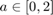
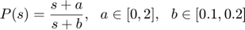
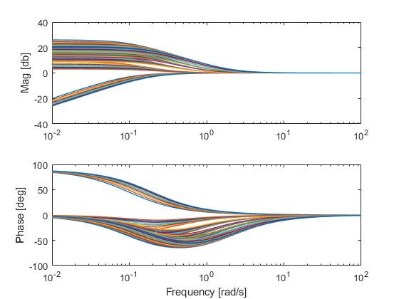

Modeling of uncertain plants
Contents
Overview
The first stage in QFT design is to define the uncertain plant. Open Qsyn facilitates plant modeling using these classes:
- qpar describes a single uncertain parameter
- qexpression describes an aritmatic expression composed of one or more qpar elements
- qpoly describes an uncertain polynom --composed of qpars and qexpressions
- qplant describes an uncertain plant
Note that this page describes plant modeling as a set of LTI tranfer functions. Open Qsyn also allows for "black box" plants and for plants described as measured frequecy response data. See Black Box Example and Data Based Design Example, respectively.
Modeling uncertain parameters
Uncertain parameters are modeled using qpar objects. a qpar object is constructed as follows
a = qpar(name,nominal_val,lower_bound,upper_bound,cases)
where name is a string; nominal_val, lower_bound, upper_bound are scalar numbers describing the nominl value, lower bound, and upper bound, respectively; cases is an optional input agrument which specifies the number of uncertain cases, i.e. the number of grid points.
Exmaple: constarct an uncertain parameter  with nominal value 1.
a = qpar('A',1,0,2)
3 cases are selected as default
a =
qpar with properties:
name: 'A'
nominal: 1
lower: 0
upper: 2
cases: 3
discrete: []
description: []
as 'cases' was not specified, the qpar element is crearted with the default value of cases, which is 3. Note also that the name, in this exmaple A, may be different from the parameter in which the element is stored, in this exmaple a.
One can add a description to a parameter by utilizing the description property, for e.g.
a.description = 'an exmaple parameter';
Elements of qpar class can be grouped into qpar array by vertical concatenation. Hence, qpar array are all column vectors. Horizontal concatenation serves a specific role which will be discussed later.
Example: crate a qpar array
b = qpar('B',0.2,0.1,0.2,4);
parArray = [a ; b]
parArray =
2×1 qpar array with properties:
name
nominal
lower
upper
cases
discrete
description
One can generate random smaples of a qpar object or array using sample(), or generate a grid using grid(). These functions produces values which are in the uncertanty range of tha pearmeter(s).
asmap = sample(a,5) absamp = sample(parArray,5) pargrid = grid(parArray)
asmap =
1.6294 1.8116 0.2540 1.8268 1.2647
absamp =
0.1951 0.5570 1.0938 1.9150 1.9298
0.1158 0.1971 0.1957 0.1485 0.1800
pargrid =
Columns 1 through 7
0 1.0000 2.0000 0 1.0000 2.0000 0
0.1000 0.1000 0.1000 0.1333 0.1333 0.1333 0.1667
Columns 8 through 12
1.0000 2.0000 0 1.0000 2.0000
0.1667 0.1667 0.2000 0.2000 0.2000
Note that sample and gird are methods of the qexpression class. Class methods are functions which can take class objects as inputs. To list all methods of a specific object type methods(object):
methods(a)
Methods for class qpar: grid linspace mtimes qpar unique horzcat minus nom sample uplus ismember mrdivide plus uminus
T oget help on a specific function type help object.method, or help object/method.
help a.ismember
--- help for qpar/ismember --- ISMEMBER true for set member. ISMEMBER(A,B) returns a vector of logical indices positive forevery element of parameter set A that is a member of parameter set B.
Creating uncertain arithmetic expressions
qpar elements can be combined with other qpar elements and numericals to create uncertain arithmetic expressions. Allowed arithmetic expressions are +, -, *, /.
Exmaple:
ab = a*b
ab =
qexpression with properties:
expression: 'A * B'
pars: [2×1 qpar]
the * opetation created a qexpression elements. A qexpression stores the parametric description along with a list of all envolded qpar objects in a qpar array.
To accsess the array use qexpression.pars. For exmaple:
ab.pars(1)
ans =
qpar with properties:
name: 'A'
nominal: 1
lower: 0
upper: 2
cases: 3
discrete: []
description: 'an exmaple parameter'
Alternatively, a qexpression can be generated explicity using the syntex expr = qexpression(A,B,operation). Hence the following is identical to the previous example
ab2 = qexpression(a,b,'*')
ab2 =
qexpression with properties:
expression: 'A * B'
pars: [2×1 qpar]
One can compute the qexpression values at different parameter cases using cases(), which by default compute values on a uniform grid of the parameters space, with number of grid points defined by the cases property in each qpar.
cases(ab)
ans =
Columns 1 through 7
0 0.1000 0.2000 0 0.1333 0.2667 0
Columns 8 through 12
0.1667 0.3333 0 0.2000 0.4000
Creating an uncertain polynomial
An uncertain polinomial is represented by a qpoly object. Each coefficient in such polynomial is either a qpar, a qexpression, or a real scalar. A qexpression is generated by horizolnal concatenation of elements
p1 = [1 a]
p1 =
qpoly with coefficients
s1: 1
s0: 'A'
Alternatively, it can be generated explicitly using the syntex p = qpoly(an,...,a1,a0). Hence the following is identical to the previous example
p2 = qpoly(1,a)
p2 =
qpoly with coefficients
s1: 1
s0: 'A'
Again, values at different parameter cases are computed using cases(). To retrive the coefficients, one can use the method coeffs()
[a1,a0]=coeffs(p1)
a1 =
1
a0 =
qpar with properties:
name: 'A'
nominal: 1
lower: 0
upper: 2
cases: 3
discrete: []
description: 'an exmaple parameter'
Creating the plant
Finally, an uncertaon plant, or qplant, is generated by
P = qplant(num,den)
with num,den two qpoly objects which represents the plant transfer function numerator and denumerator.
Example: create the plant

num = [1 a]; den = [1 b]; P = qplant(num,den)
P =
qplant with properties:
num: [1×1 qpoly]
den: [1×1 qpoly]
pars: [2×1 qpar]
delay: []
unstruct: []
uncint: []
info: 'generated from [num,den] data on: 25-Mar-2020 11:58:59'
templates: [0×0 qtpl]
nominal: [0×0 qfr]
The plant P is a qplant objects which includes the num,den qpoly object as properties, as well as a pars property which stores the qpar array of qpar objects in both qpolys.
A plant object allows for time as well a frequency domain simulations with the methods such as step, niccases, and bodcases (stands for Nichols-cases and Bode-cases, respectively). For example, a Bode plot of a uniform grid of 8 points for each parametr is done by
pargrid=grid(P.pars,8); bodcases(P,pargrid)
This is the time to move forward to Step 2: Template Computation